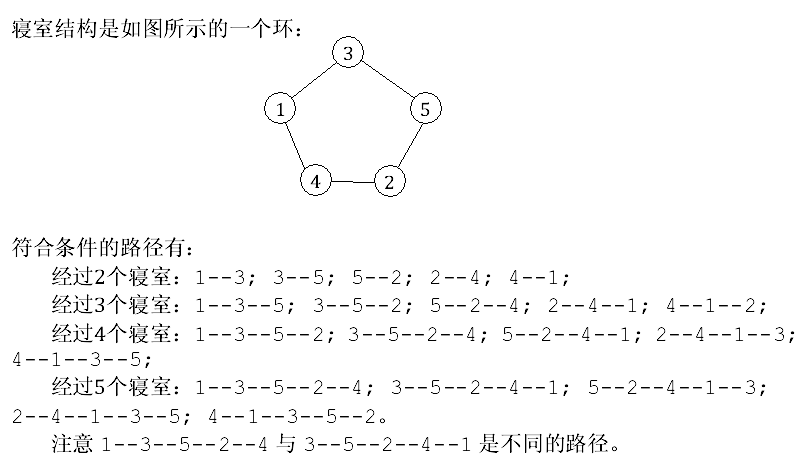

第一行为三个正整数N，M，K（2 ≤ K ≤ N），代表有n间寝室，m条边连接它们n-1 ≤ m ≤ N；
m= n-1意味着“情报遁道”未被修好；m=n意味着“情报通道”已被修好），以及题目描述中的K。
接下来m行，每行两个正整数z，y，代表第x间寝室与第y间寝室之间有一条双向边。
仅包含一个整数，代表经过至少K间寝室的路径条数。
5 5 2
1 3
2 4
3 5
4 1
5 2
20

N≤100000
K≤N
M=N